id="js_content" style="">
人靠遗忘勉强活着，尤其是经历了政治和战争洗礼的人，但生活要求我们记住真相，绝不向遗忘屈服。
——库斯图里卡
20世纪人类有两大灾难：希特勒的“我的奋斗”和max的“人间天堂”。
因为他们，才有了惨绝人寰的奥斯维辛和自我屠杀的红色高棉。
如果要找一部电影来认识这些残酷、荒谬和谎言。
那么这部电影一定是库斯图里卡的巅峰之作《地下》。
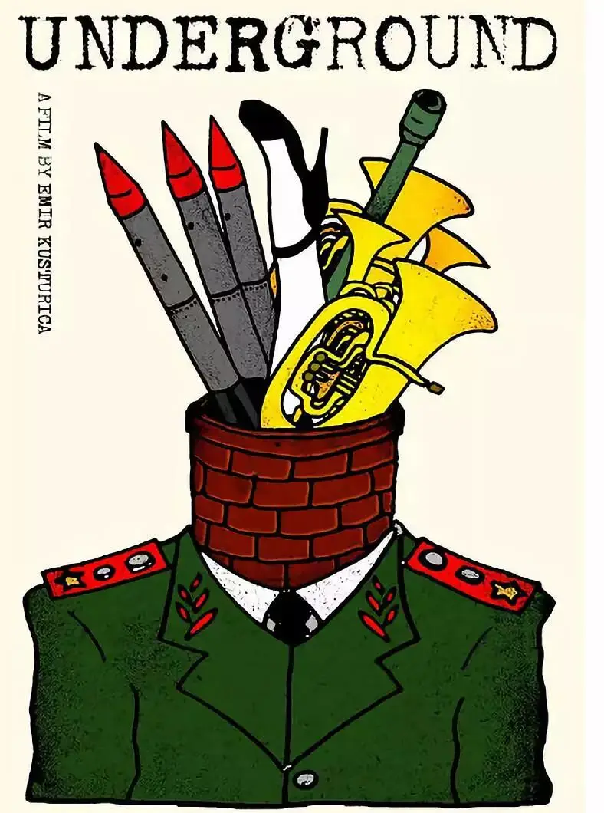
这是一部脑洞大开、癫狂至极的史诗作品，描述了前南斯拉夫从二战到社会主义建国再到内战、解体半个多世纪的社会状况。
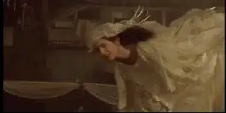
豆瓣评分高达9.1，获第48届戛纳电影节金棕榈奖。
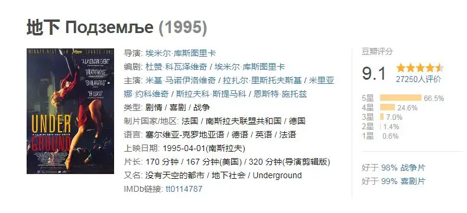
-01- 战争
电影开始于一阵狂欢和聒噪中。
主人公小黑坐在马车上一边鸣枪，一边大叫。
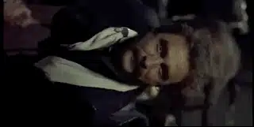
稍有不慎子弹就可能击中旁边喝着白兰地的好友马高。
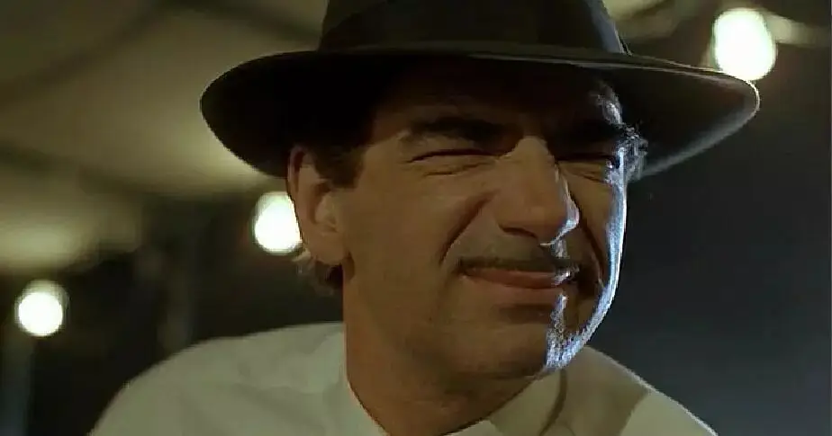
两人东倒西歪、欢呼雀跃，小跑跟在他们身后的吉普赛乐队一边演奏着欢快的音乐，一边伸手抓着他们撒在空中的钱币。
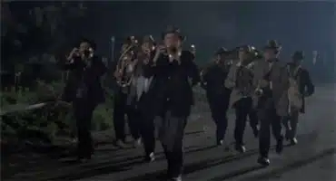
原来，这是在庆祝我们的小黑同志加入了南斯拉夫共产党。
幸好是在别国，要不然他们会被批斗的很惨。
回家途中，他们遇到了马高的弟弟伊凡，他是一个口吃、呆傻，和动物生活在一起的“白痴”。
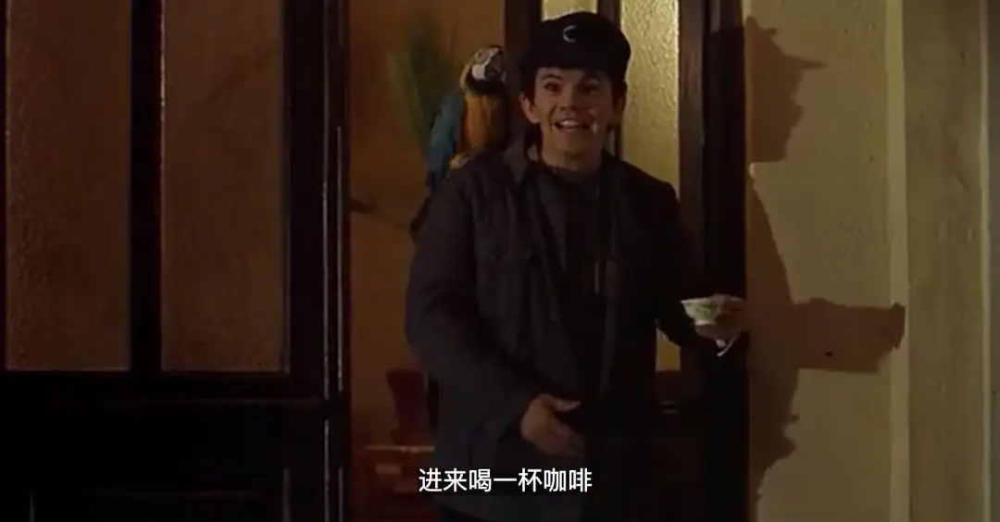
就这样，音乐、狂欢、酒精、动物、疯癫甚至有些精神错乱就成为了《地下》的打开方式。
估计也只有库斯图里卡的这种癫狂的表现方式才能够凸显出人类的疯狂和荒谬。
△ 库斯图里卡：导演、动物园园长、贝斯手
紧接着电影表现出故事发生的背景。
南斯拉夫正遭到德国的轰炸，此时伊凡正在喂养动物园里的动物。
忽然之间，动物开始上蹿下跳。
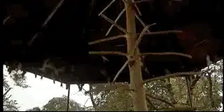
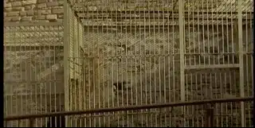
一阵轰炸过后，很多动物都死在战火中。
一个受了重伤的猴妈妈奄奄一息地看着自己刚出生的小猴索尼，这个镜头有很强的反战冲击力。
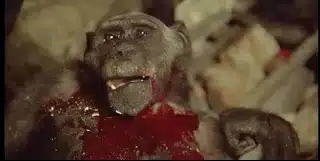
看着那么多和自己相依为命的动物死去，伊凡痛苦不已。
小黑安慰他：行了，别哭了，德国人会取笑你的。
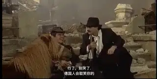
于是，刹那的严肃过后，电影便开始了漫长的疯癫。
外面狂轰滥炸，马高却自在地享受着鱼水之欢。
而小黑同志在家里淡定地吃着饭，妻子维拉在一旁说，对着那些炸弹你怎么能吃的下。
小黑诙谐地告诉维拉：置之不理。
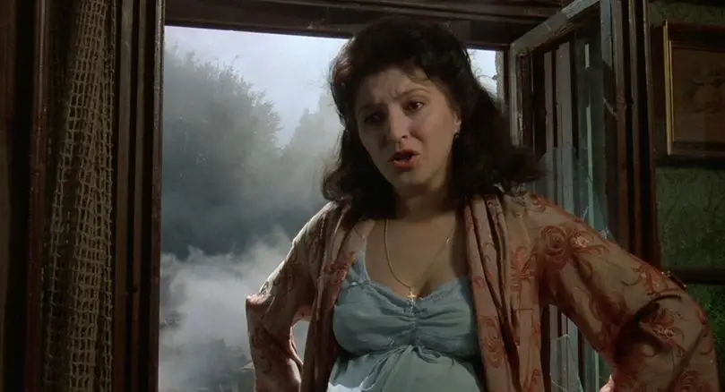
但是饭桌上面的吊灯还是被震了下来，打扰了小黑的雅兴。
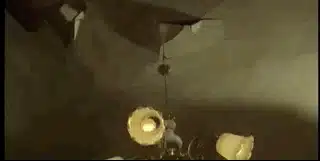
小黑直接跳到桌子上，用牙将电线咬断，头发都被电的变直了，但是小黑没有一点事。
因为，小黑是一个电工（铁托是五金工）。
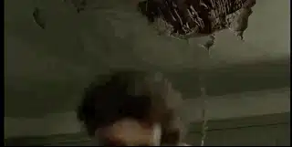
接着小黑披起外套，拿着钞票和枪就要和法西斯战斗了。
可是一出门，这位小黑同志就开始和年轻漂亮的女演员娜塔莉佳调情。
为了讨得欢心，小黑还将偷来的项链送给了娜塔莉佳。
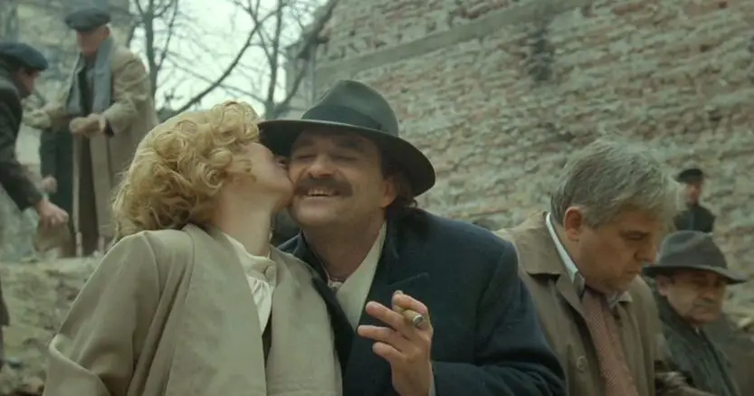
而娜塔莉佳也深得纳粹军官喜欢，为了保证下肢瘫痪的弟弟巴图可以得到好的医治。
娜塔莉佳不得不选择和纳粹军官在一起。
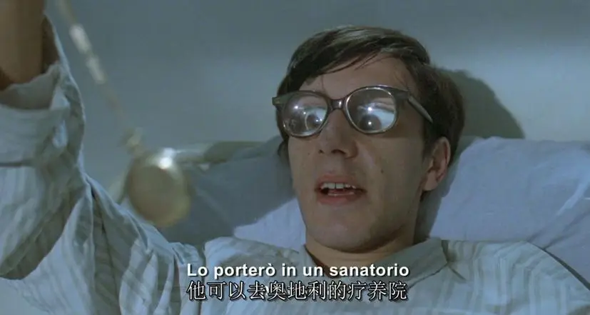
而小黑和马高也被人举报，他们遭到了纳粹的通缉。
于是，很多人不得不躲在马高家的地下来躲避战火。
地下聚集着大量的人，甚至已经成为了一个自给自足的小社会。
小黑的妻子维拉刚刚来到地下，里面的恶臭让她反胃，肚子一阵不舒服便摔倒在楼梯上。
可怜的维拉一级一级楼梯地从上面摔了下来。
肚子开始剧烈的疼痛，维拉要生了！
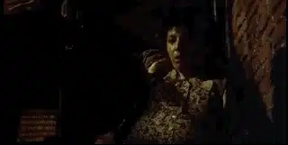
终于，小黑的儿子约凡出生在地下，而维拉却死去了。
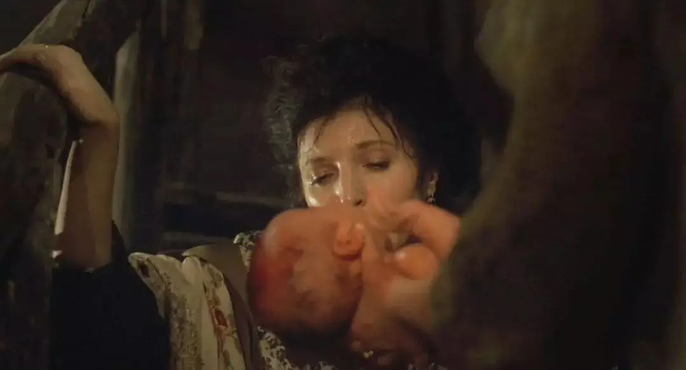
而没心没肺的小黑却正在和马高上蹿下跳想着从纳粹手中把娜塔莉佳夺回。
当娜塔莉佳在剧院表演话剧时，小黑和马高制造混乱，不仅开枪打死了几个德国人，还趁乱浑水摸鱼偷了很多贵重的首饰。
甚至，小黑把自己和娜塔莉佳绑在一起，直接背着娜塔莉佳赶往婚礼现场。
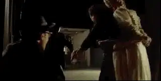
那里有小黑早已准备好的乐队和宴饮。
就差已经打好招呼的牧师赶来，婚礼便可以顺利举行。
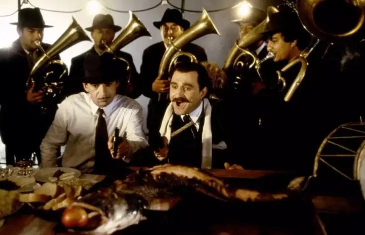
欢快的吉普赛小号、哭喊着的娜塔莉佳、酒杯交错的声音、打了鸡血一样的小黑和马高，再偶尔来一两声枪声。
整个场面混乱不堪又浑然天成。
就是在这个宴会上，小黑和马高之间起了隔阂，娜塔莉佳为了逃脱，向马高暗送秋波。
马高和小黑都爱上了娜塔莉佳。
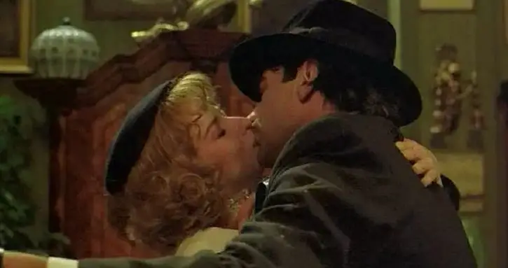
兄弟之间还没有处理好这件事，纳粹便找到了他们，小黑被抓，遭受了电击酷刑。
幸好小黑是电工，顶住了“十万伏特”。
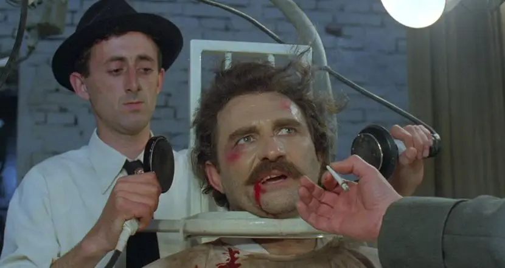
马高假扮医生混入敌方，将小黑和娜塔莉佳从纳粹手中救出。
令人啼笑皆非的是，藏在箱中的小黑却不小心拨动了带在身上的炸弹。
随着一声巨响，小黑被炸成重伤，被马高送到地下养伤。
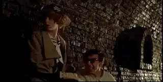
娜塔莉佳也自然拥入马高的怀中。
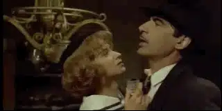
-02- 谎言
如果第一部分聒噪的让你受不了，那么这一部分一定会让你后背发凉。
小黑躲入地下不久后，二战结束了。
1945年，铁托领导下的南斯拉夫共产党建立起南斯拉夫联邦人民共和国。
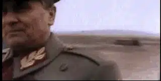
于是，作为曾经和铁托并肩作战的马高，一下子成为了伟大的革命艺术家、诗人和领导人。
他向人民发表着伟光正的演讲，而一向放荡的娜塔莉佳也成为了十分正派的领导夫人和人民艺术家。
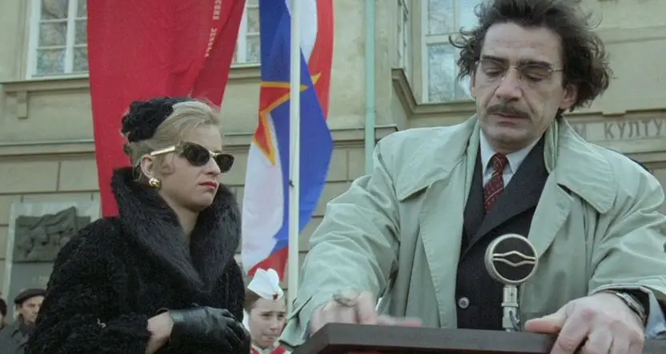
而我们的小黑同志却仍旧和大伙活在地下社会中。
原来，作为和地上联系的唯一牵头人，马高欺骗了地下的人，说战争还在继续。
为了防止一向勇猛冲动的小黑冲出地下，马高假传圣旨，告诉小黑是铁托命令他留在地下养精蓄锐。
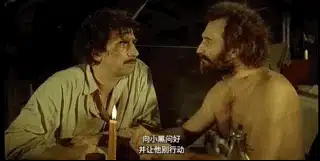
甚至为了逼真，马高每天会在地上播放战时录音带、通过机器模仿轰炸机呼啸而过的声音，并通过探头监控着小黑的一举一动。
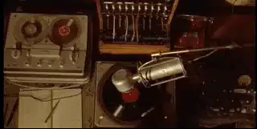
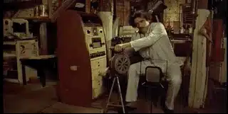
而蒙在鼓里的众人，像打了鸡血一样以革命的热情在地下拼命制造枪支，甚至还鼓捣出一个坦克。
而马高却将这些兵器走私到国外，赚取暴利。
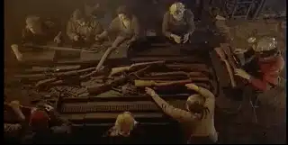
令人震惊的是，这个谎言竟然持续了20年。
马高担心小黑他们等得不耐烦，命令眼线暗中在钟表上动手脚，所以地下的人以为时间只是过了15年。
幸好地下有吉普赛音乐和假想的敌人，所以他们过的很有目标感，很是充实。
马高和娜塔莉佳在地上是伪君子，在地下又是骗子。
唯一真实的就是两人在房间中放肆地享受着鱼水之欢。
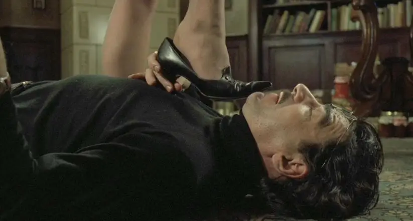
权、钱、色他们都得到了，但是依旧良心难安。
因为生活少了真相。
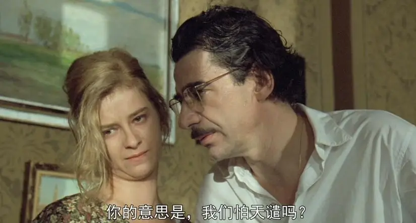
为了让自己好受些，马高将小黑塑造成一个光荣战死的英雄。
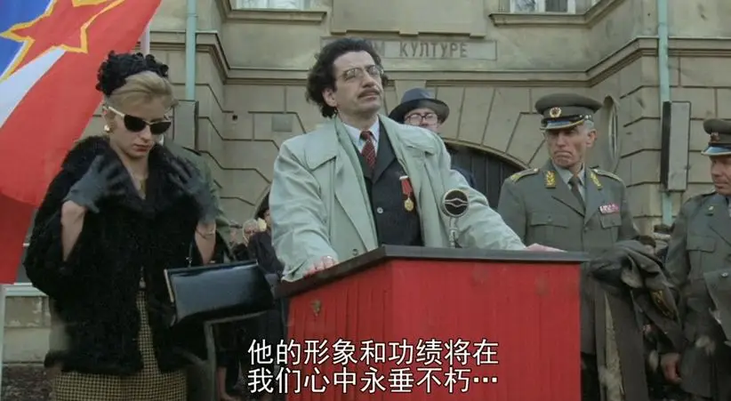
并为他竖立起纪念雕像。
就这样，小偷、电工、没心没肺的小黑成为了让南斯拉夫人民热泪盈眶的英雄。
甚至，有剧组要将小黑的伟大事迹拍成电影。
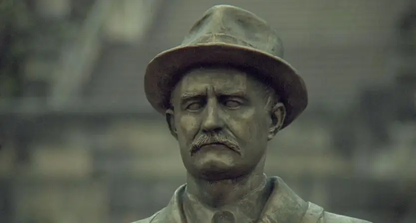
像第一部分一样，戏剧的高潮再次发生在一次婚礼中。
出生并长大在地下的约凡要结婚了。
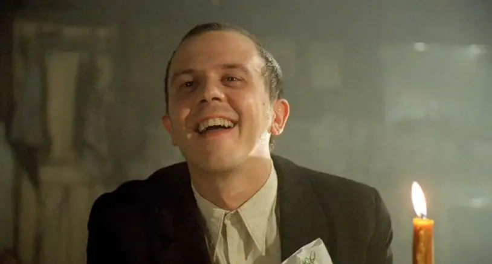
即使是在暗无天日的地下，这帮人照样可以玩的飞起。
伴随着欢快的音乐，穿着洁白裙子的新娘向众人徐徐飞来。
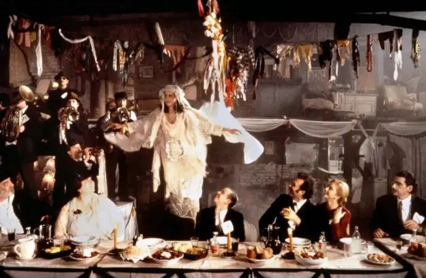
为了这个效果，大家也真是下足了功夫，有人推着架子车，有人在前面挤着气囊吹气。
于是新娘美丽的裙子随着微风轻轻拂动，仿佛真的飞在空中。
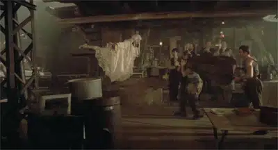
婚礼仪式上，小黑和大伙向一直保护大家的马高表达了发自内心由衷的感谢。
马高羞不敢当，连连摇头，娜塔莉佳则故意朝着马高鼓掌来暗讽他的虚伪。
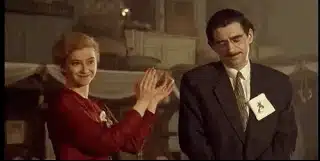
在婚礼上，两人良心难安、痛苦不已，娜塔莉佳则拼命的喝酒、跳舞。
马高害怕娜塔莉佳酒后乱言，竭力阻止娜塔莉佳喝酒。
外表放荡、内心苦楚的娜塔莉佳告诉马高：清醒时我无法面对你。
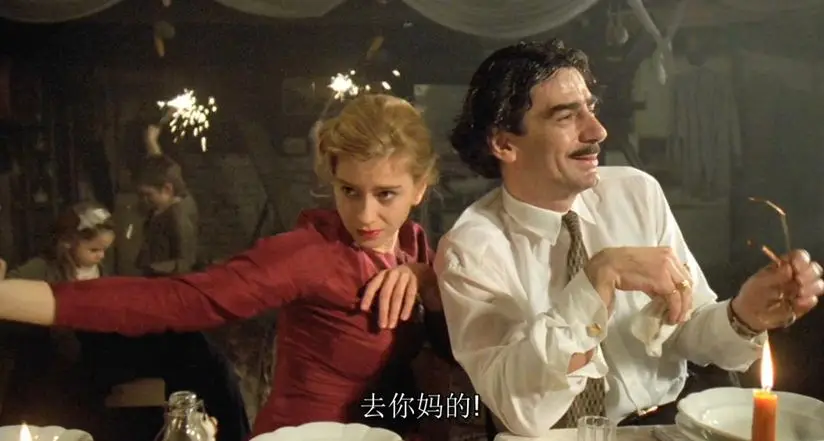
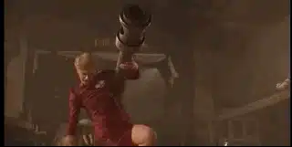
△ 著名的坦克钢管舞
在这场婚礼上。
马高和娜塔莉佳良心不安到达了顶点。
在地下没日没夜过活的小黑内心的压抑也到了顶点。
骗子、傻子、疯子、动物的狂欢也到达了顶点。
战争、谎言下的荒谬气氛也在地下达到了最高的浓度。
现在就差有人将这一切点燃引爆。
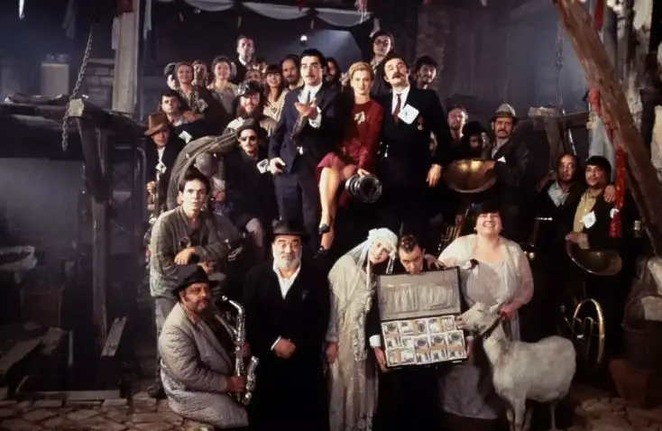
△ 最后的合影
可是傻子已经醉倒，疯子已经癫狂的找不到方向，而骗子更不会自掘坟墓。
这难不倒库斯图里卡，既然这个光荣的任务人类完不成，那就交给猴子索尼吧。
小号手看着跳舞的索尼慢慢走向坦克，直至钻入坦克中。
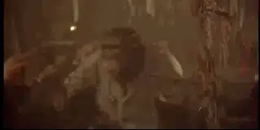
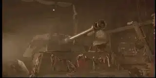
看着炮筒移动，小号手发出了先知一般的预言：大祸临头了。
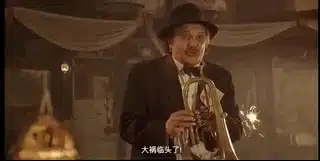
这声疾呼在狂欢和酒醉的大海中只是泛起了一点小小的涟漪，很快便消失。
无人在乎，甚至没有人能听见他的话。
当小号手第二次恐惧地喊着“大祸临头了”。
话音刚刚落下，一个炮弹从小号手的帽子旁呼啸而过，索尼用坦克把地下打开了一个洞。
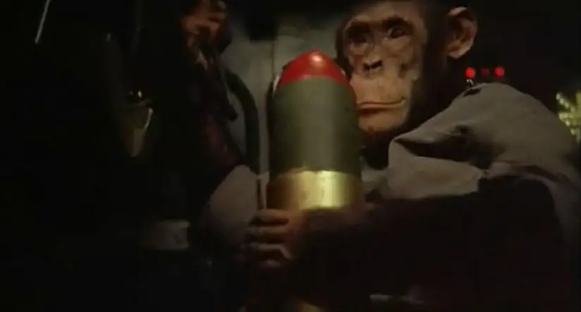
高潮过后，全片的剧情开始急转向下，地下所有人的命运令人唏嘘。
傻子不敢离开地下，最后被马高用炸药毁尸灭迹。
疯子小黑则带着儿子约凡离开了地下。
因为找不到约凡，新娘在恐惧和慌张中投井自杀。
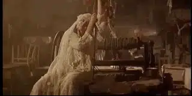
猴子索尼则在慌乱中跑离地下。
伊凡跑出去追索尼，却意外搭上了去往德国的汽车，最后住进了精神病医院。
骗子马高因为自责开枪打断了自己的腿，酒醒后杀人灭口、潜逃出国，继续贩卖着兵器。
讽刺的是，在做出这个残忍的决定时，马高抛下了一句大实话：
老实人没法生活在这个国家。
于是，这位“老实人”杀人越货，最终人间蒸发。
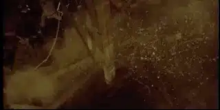
没有真相，大家可以像猪一样活着。
有了真相，你可能都没有命看见明天的太阳。
那种历史悲剧下悲情、苦涩、绝望的复杂情感，也只有在库斯图里卡的《地下》能够完全体会到。
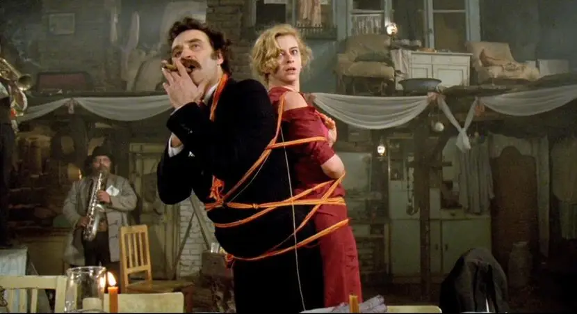
闯出去的小黑和约凡代表着我们的希望。
在我们眼中，他们不再是陌生的吉普赛人，而是让我们悲悯的朋友。
这两个愣头愣脑的家伙不再是疯子，而是重返人间的赤子。
尤其是对于约凡，这是他有生以来第一次来到地上。
当他看到皎洁的月亮时，约凡兴奋地告诉爸爸：看，那就是太阳。
小黑慈祥地告诉约凡，这是月亮。
约凡接着问，那太阳哪去了。
小黑很有爱心地告诉约凡：太阳睡着了。
第一次，我觉得这个没心没肺的小黑真的是一个父亲，他对约凡的爱也令人无比感动。
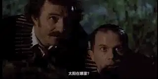
更有意思的是，当约凡指鹿为马时，小黑告诉他，那不是马，那是鹿。
这代表着他们认知上开始回归正常。
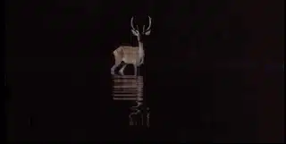
而更有意思的是，他们跑出来时，恰好剧组在拍关于小黑的电影。
真的小黑开枪打死了扮演纳粹军官的演员，“演员小黑”在旁边一脸懵。
而导演看到演员装死装的那么真实，兴奋地大叫继续演下去。
接着小黑开着车朝着纳粹演员丢了几个手榴弹，剧组陷入一片骚乱中，很多演员被炸死。
毕竟，假的就是假的，那就让“复活”的小黑把这些谎言亲手埋葬吧。
第二日，小黑和约凡泛舟海上，太阳徐徐升起，美丽的早霞洒满整个天空和海面。
第一次见到美丽的太阳，约凡摇头晃脑，激动地说：这个世界多么美妙啊。
这个瞬间真的很美好，很让人心醉。
多么希望可怜的约凡可以见到更多大自然的奇迹。
可是残酷却扑灭而来，军队开着直升机来杀戮他们的英雄小黑。
小黑忙于战斗，约凡溺死在水中。
这真的太残酷了，神奇的是，正当约凡在水底挣扎时，死去的新娘忽然从别处游来。
两人相拥游向远方，库斯图里卡用似幻似真的童话给了我们希望，看的让人心碎又满含泪水。
对于孑然一身的小黑而言，约凡的离开似乎和自己玩了一个躲猫猫，只是暂时找不到了。
看不到眼泪，分不清死亡，图斯库里卡的处理看似荒谬，但却抓住了人类最大的真实：我们永远难以面对至亲的离去，希望美好永存。
看着渺小的小黑在一望无际的大海中自言自语：“我的约凡怎么找不到了”。
那种悲凉和孤独真的要让人泪奔。
这一部分最终结束于铁托的死亡，历史真实画面和电影的转化做的天衣无缝，故事的内核和情感因为历史显得更加复杂、无奈和真实。
△ 看一下熟悉的面孔：华国锋，朝鲜的金日成，苏联的勃列日涅夫，东德的昂纳克，巴基斯坦的齐亚·哈克，英国的撒切尔夫人，罗马尼亚的齐奥塞斯库.....
-03- 内战
如果上一部分让你脊椎发凉，这一部分会彻底地唤起你对那片土地、那段苦难历史的悲悯。
多年以后，住在精神病医院的伊凡已不再是那个年轻呆萌的小伙子。
他的头发已变得稀疏、花白，背也开始佝偻。
对于伊凡，最残酷的还不是年老，而是令人绝望的真相。
在报纸上，伊凡才知道是自己的亲哥哥马高欺骗和杀害了地下的朋友。
伊凡泣不成声，他使劲全力要赶往南斯拉夫。
后面是德国热闹的烟火和都市，但是伊凡知道，他不属于这里，他只属于南斯拉夫。
当他爬到下水道后，他才发现通道一边通往柏林，一边通往雅典，却再也没有了南斯拉夫。
绝望的伊凡只能茫然走在没有方向的下水道中，能懂他的也只有一直留在下水道中的索尼。
索尼像人一样拥抱安慰着伊凡。
伊凡最终来到南斯拉夫，却发现这片土地再次处于战乱中，而南斯拉夫也逐渐解体。
△ 在1990年代，南斯拉夫分裂为斯洛文尼亚、克罗地亚、波士尼亚和黑塞哥维纳、马其顿、黑山、塞尔维亚，以及塞尔维亚境内的两个自治省：科索沃和伏伊伏丁那
而坐在轮椅上的马高和娜塔莉佳却还在贩卖军火，发国难财。
伊凡找到马高，在悲愤中用拐杖将马高活活打死，
战争始于兄弟间的杀戮，这似乎也在隐喻着南斯拉夫内部的手足相残。
绝望的伊凡最后上吊自杀，而卧在一旁的索尼见证了伊凡最后的悲剧。
小黑此时已经成为了民兵的头目，当手下发现马高和娜塔莉亚的时候。
他们询问小黑如何处置这两个军火投机商，小黑不以为然的说：就地处决。
于是士兵开枪打死了娜塔莉佳，并用汽油和两人昧着良心赚的的钞票将他们焚烧。
当小黑后面看到马高和娜塔莉亚的护照时，慌了神的他急忙跑往现场，而此时，马高和娜塔莉佳已经被处决焚烧。
两具焚烧中的尸体随着轮椅绕着十字架转动，似乎在向上帝忏悔。
小黑则绝望地抱着十字架撞头，旁边是倒挂在十字架上的耶稣。
这个镜头意味深长，充满了绝望和悲悯！
最后，像是失了魂一样的小黑一人来到地下，这里没有了往日的欢乐，坦克上面甚至已经长满了苔藓。
物是人非，所有人都离自己而去，战争、谎言以及所有功过是非在时间面前都没有了色彩。
满头白发的小黑对着索尼喃喃自语：
“找了这么多年，怎么就找不到约凡呢”。
电影似乎要开始于喧嚣和狂欢，结束于死寂和绝望。
但这不是库斯图里卡的电影，他的电影一定是开始于狂欢、结束于狂欢的。
但是只有小黑一个人，还怎么狂欢。
那就给想象力插上翅膀吧。
小黑忽然听到约凡在叫自己的名字，那个声音那样亲切、那样熟悉。
小黑来到旁边的水井，在水中仿佛看到了约凡在和自己说话。
小黑纵身一跃跳入水中。
在流动着生命气息的水中，时间仿佛回到了二十年前。
他在水中看到了约非和自己的儿媳妇，还有自己的妻子维拉，马高和娜塔莉佳也从远处慢慢游过来。
他们从水中上岸后，迎接而来的依旧是约非的婚礼。
对比三场婚礼会非常有趣:
二战期间，德国侵入南斯拉夫，小黑也强娶娜塔莉佳，战争和婚礼都充满了强权和荒谬.
铁幕时期，大家活在伟光正和谎言中，所以约凡的婚礼中一样暗流涌动，各怀心思，充斥着谎言掩饰下的假狂欢。
经过时间和死亡的洗礼，最后天堂一般的婚礼终于重回理性，小黑不再是抛妻弃子、没心没肺的浪子。
他和自己的妻子维拉安坐在一起，并盛赞妻子的这场策划。
面对马高的道歉，小黑笑着说：我能原谅但我不能忘记。
这个回答充满恩慈和智慧。
而得到原谅的马高兴奋的亲了小黑一口。
这场狂欢不仅没有了疯子和骗子，也没有了傻子和病人。
巴图不再截瘫，可以自由的跳舞。
伊凡也不再是一个说话结巴的傻子，他用清澈的双眼望着镜头，说下了本片最感人的一段台词：
在这片土地上，我们盖起了新的屋舍，它们有着红色的房顶以及向宾客敞开的大门。
鹳鸟也在这里筑巢。我们感激养育我们的土地，感激温暖我们的太阳，感激这片令我们怀念起家乡绿地的田野。
我们还会怀着或悲伤或喜悦的心情回忆我们的祖国吗？
当我们向子孙讲述这个故事时，它会像所有故事那样开始：‘在很久很久以前，曾经有一个国家……’”
在这个充满和解和温暖的婚礼上，大家在吉普赛乐曲中载歌载舞，他们所在的土地也和大陆分裂飘在大海上。
既充满了梦幻，又显得那么孤独。
心中五味杂陈，又说不出是什么感觉。
因为你已经被感动的说不出话来。
战争时代，地下是庇护所，害怕外面的子弹和坦克。
铁幕时期，地下就是贡产主义，害怕真相和阳光。
自由年代，地下是伤痛的记忆，害怕回忆和追问。
人类既疯狂又软弱，既嫉恶如仇又没心没肺。
幸好我们有库斯图里卡的《地下》，不至于忘记有个国家叫南斯拉夫，她在过去一个世纪里一直在流泪。
希望将来我们能拥有自己的“地下”：
有个郭叫中郭，郭里有个人叫李狗蛋，他曾躲在狗窝而逃过日军的扫荡。
后来他种出过比西瓜都大的萝卜，养过比大象都大的猪。
他曾让老师跪在自己的面前，也曾带着高帽子被人唾骂。
他曾手拿小红本一路白吃白喝来到天安门对着主席像痛哭流泪。
也曾因为偷吃一把大豆被人批斗丢在干部家的狗窝和狗一起看门、一起吃饭。
他扛过了人吃人的大饥荒时代，走过了互相举报的荒谬十年。
于是，在新时期里，狗蛋变成了狗爷，因为他命硬。
一天，狗爷被流浪狗咬伤了腿，来了几针狂犬意描后，狗爷依旧气壮如牛。
两个月后，在他八十大寿上，正当狗爷激动地向家人讲着自己过去的传奇经历时。
狗爷狂犬病发作，暴毙而亡！
关注并回复：地下
获取电影资源
相关推荐：
疯子带着瞎子走路，这正是我们时代的病态！
像猪一样活着，像猪一样死去 !
73年过去了，纳粹离我们有多远？
你们一直在抱怨这个地方，但是你们却没有勇气走出这里
击垮纳粹独裁的六份传单
这里没有挑逗你眼目情欲的小鲜肉
也没有挑动你肉体情欲的段子
更没有膨胀你今生骄傲的鸡血
我们只在乎那些最质朴真诚的作品
在那里我们才能恢复真正的想象力
我们也坚信这才是我们真正需要的

ID:Six_hundred_hits
长按二维码，一键关注
【六百击】
-END-
电影评论
尽情分享朋友圈

苹果打赏通道
小提示：文末广告是腾讯配送广告，内容与本号无关，但您的每次点击（无需反复点）都会给平台带来几毛收益，欢迎您点击支持六百击。